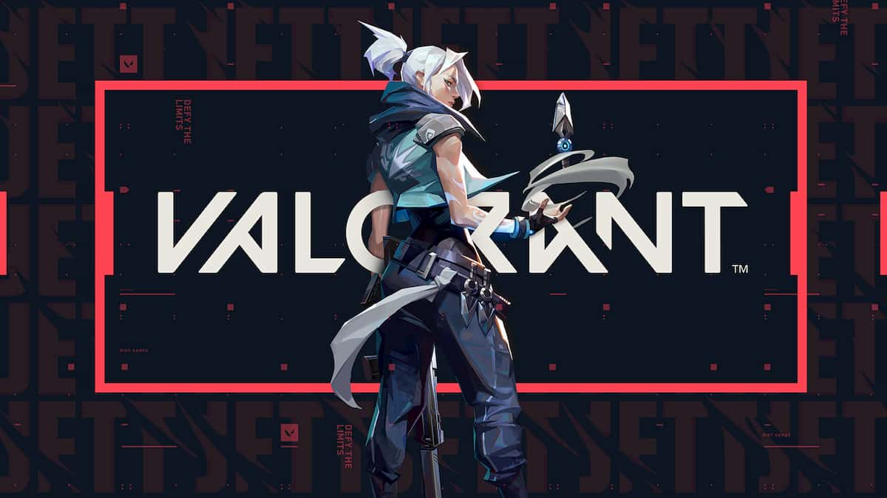

Jogos eletrônicos são formas de entretenimento interativas que proporcionam experiências únicas aos jogadores. Com diversos gêneros (FPS, Retro, Esportes ...) e plataformas (PS5, XBOX, PC, Nintendo ...), jogos oferecem desafios, aventuras e histórias cativantes. Além disso, jogos também podem ser utilizados como ferramentas educativas e de treinamento, e são uma forma de socialização e conexão entre jogadores de todo o mundo. Um dos principais atributos dos jogos eletrônicos é a capacidade de oferecer desafios. Através de mecânicas de jogo complexas e enredos intrigantes, os jogos conseguem manter o jogador engajado e desafiado, levando-o a explorar novas habilidades e conhecimentos.
Valorant

Valorant é um jogo de tiro em primeira pessoa desenvolvido pela Riot Games. Nele, duas equipes de cinco jogadores disputam em rodadas para atingir objetivos, como plantar ou desarmar uma bomba. Cada jogador escolhe um agente, com habilidades e armas únicas. Com gráficos de alta qualidade e jogabilidade estratégica, Valorant é um jogo intenso e emocionante. O jogo também conta com um sistema antitrapaça e atualizações regulares para manter a comunidade engajada.
Rainbow Six
Rainbow Six Siege é um jogo de tiro em primeira pessoa tático desenvolvido pela Ubisoft. Nele, duas equipes de cinco jogadores, atacantes e defensores, disputam em rodadas para atingir objetivos, como resgatar reféns ou desarmar bombas. Cada jogador escolhe um operador, com habilidades e equipamentos únicos. Com gráficos realistas e jogabilidade estratégica, Rainbow Six Siege é um jogo desafiador e empolgante. O jogo também conta com um sistema de progressão, permitindo aos jogadores desbloquearem novos operadores e personalizações.
Rocket League
Rocket League é um jogo eletrônico de esportes desenvolvido pela Psyonix. Nele, jogadores controlam carros movidos a foguete e competem em partidas de futebol. O objetivo é marcar gols no time adversário usando manobras acrobáticas e velocidade. O jogo oferece diversos modos de jogo, como partidas casuais, competitivas e personalizadas. Com gráficos coloridos e jogabilidade frenética, Rocket League é um jogo divertido e viciante. O jogo também conta com personalizações para os carros, permitindo aos jogadores criar veículos únicos.
Fortnite
Fortnite é um jogo eletrônico desenvolvido pela Epic Games. Nele, jogadores enfrentam batalhas em um mundo aberto, coletando recursos e construindo fortificações para sobreviver. Com gráficos animados e jogabilidade em terceira pessoa, Fortnite é conhecido por seus modos de jogo criativos, como Battle Royale e Modo Criativo. O jogo também conta com personalizações de personagens e danças, tornando-se uma referência da cultura pop. Fortnite é um jogo gratuito, mas oferece compras dentro do aplicativo para acessórios e skins.
Minecraft Dungeons
Minecraft Dungeons é um jogo de ação e aventura desenvolvido pela Mojang Studios. Nele, jogadores exploram masmorras geradas aleatoriamente, lutando contra monstros e coletando tesouros. O jogo tem gráficos simples e jogabilidade cooperativa, permitindo que até quatro jogadores se unam para enfrentar os desafios. Com diversos tipos de armas, armaduras e artefatos, Minecraft Dungeons oferece uma ampla variedade de estratégias para combater inimigos e superar obstáculos. O jogo também conta com uma história envolvente e atualizações regulares para manter a comunidade engajada.
Elden Ring
Elden Ring é um jogo eletrônico de RPG de ação desenvolvido pela FromSoftware em colaboração com o escritor George R.R. Martin. O jogo se passa em um mundo de fantasia aberto e vasto, com batalhas intensas, habilidades mágicas e exploração de mistérios. Com gráficos incríveis e jogabilidade desafiadora, Elden Ring é um dos jogos mais aguardados pelos fãs de RPG. O jogo tem previsão de lançamento em fevereiro de 2022.
God Of War Ragnarok
God of War Ragnarok é um jogo eletrônico de ação e aventura desenvolvido pela Santa Monica Studio. Ele continua a história de Kratos e Atreus, enquanto eles enfrentam os deuses nórdicos e se preparam para o fim do mundo. O jogo promete gráficos incríveis, jogabilidade aprimorada e uma narrativa envolvente. God of War Ragnarok tem previsão de lançamento para 2022.